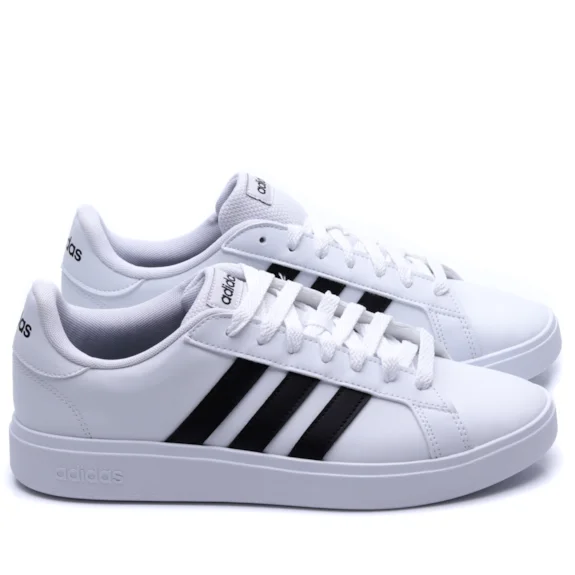

Tênis Adidas Feminino Grand Court Base 2.0 IQ 7281 estilo e conforto para seu dia a dia. Modelo indicado para criar looks espontâneos desde os mais casuais ao clássicos. Possui cabedal confeccionado em material sintetico, seu material interno é em têxtil acolchoado. Sua palmilha é macia e seu solado emborrachado.
